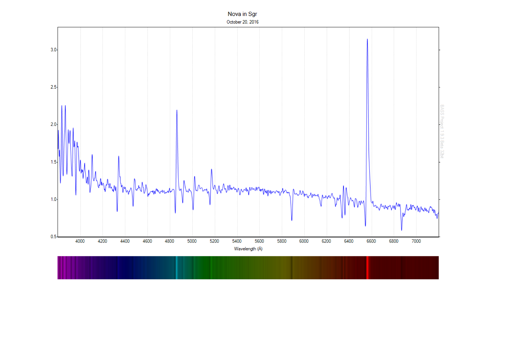
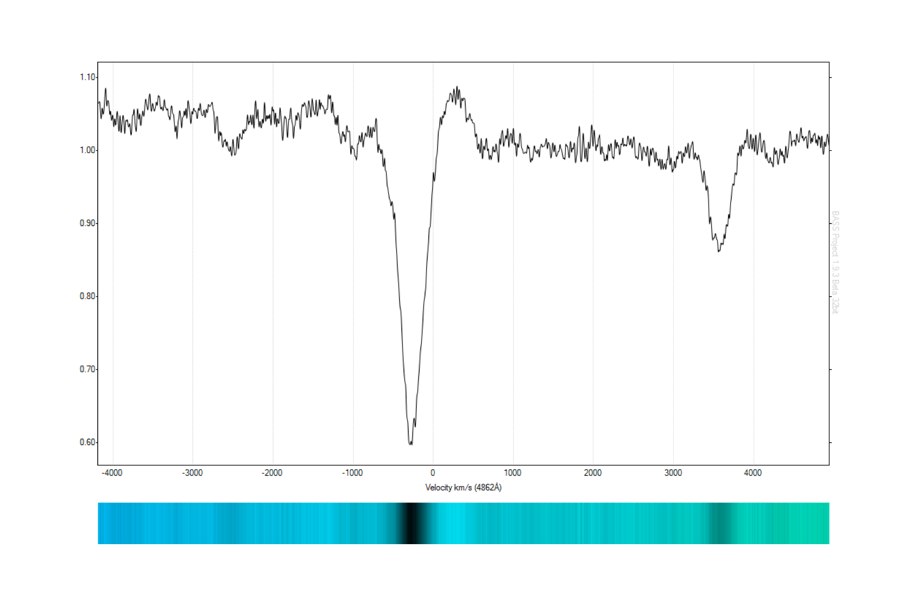
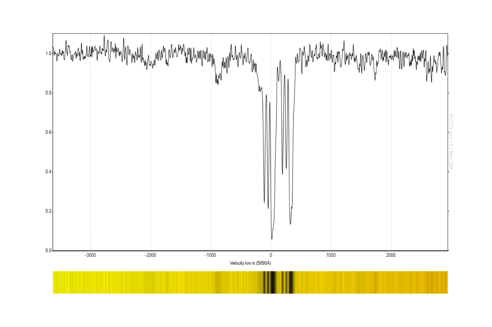

A confirmation spectrum of TCP J18102829-2729590, a galactic nova in Sagittarius. The target, setting rapidly in the west, was imaged using the Alpy 600 under challenging conditions, providing confirmation as a classical nova in the optically thick stage. The resulting ATel (kindly prepared by Steve Shore, University of Pisa) can be found here.


